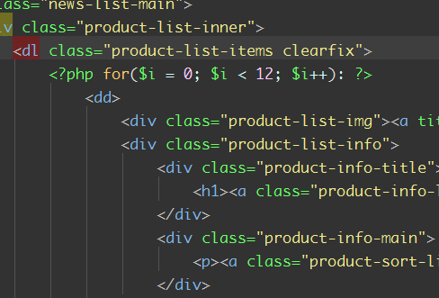
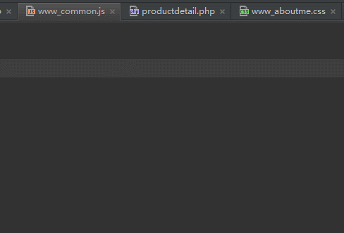
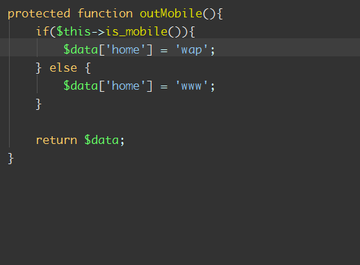
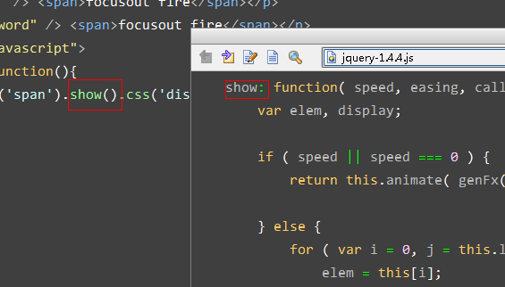

- shift + F6可以理解为F2的豪华重量版，不但可以重命名文件名，而且可以命名函数名，函数名可以搜索引用的文件，还可以重命名局部变量。还可以重命名标签名。
软回车(shift+enter, ctrl+enter，使与sublime text保持一致)就是不论光标在当前行的任何位置，都可以跳转到下一行。

alt + left/right，快速切换tab选项卡：

- ctrl + up, down移动视图，方便快捷的移动代码窗口
- alt + up, down代码方法间快速跳转
ctrl + b或者ctrl+单击:快速寻找方法，变量定义处
-
ctrl+w选中字符，连续可以多重扩展

trl + shift + i如果是css中的class则显示当前class详细信息,如果是js则显示function的详细信息(想象一下，如果在jquery的方法上查看详细信息，就直接可以看到实现代码了)，如果是php，那当时还是function的详细信息

- ctrl + / : 单行注释
- ctrl + shift + ]/[: 选中块代码
- ctrl + / : 单行注释
- ctrl + shift + / : 块注释
- shift + alt + up: 块移动(if(){},while(){}语句块的移动)
- ctrl + r: 替换
- ctrl + x :剪切(删除)行，不选中，直接剪切整个行，如果选中部分内容则剪切选中的内容
- ctrl + F12: 可以显示当前文件的结构
- ctrl + []: 匹配 {}[]
- ctrl + alt + T: 围绕包裹代码
- ctrl + j: 输出模板
- ctrl + d: 行复制
- ctrl + '-/+': 可以折叠项目中的任何代码块，包括htm中的任意nodetype=3的元素，function,或对象直接量等等。它不是选中折叠，而是自动识别折叠。
- ctrl + '.': 折叠选中的代码的代码。
- shift + esc: 当前激活的任意小窗口最小化，也可以是alt + '数字键'，数字在小窗口标题栏上有显示。
- alt + '7': 显示当前的函数结构。类似于eclipse中的outline的效果。